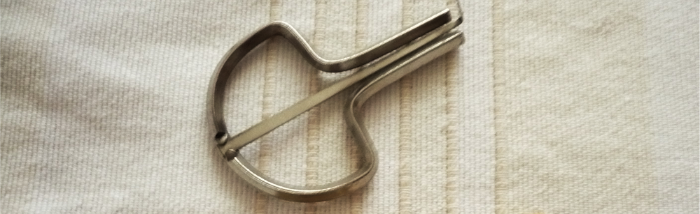

About Instrumentarium
Home > About Instrumentarium
About the site
Instrumentarium is an independent digital archive and research platform dedicated to the study and documentation of musical instruments, with particular attention to traditional practices and Latin American sound worlds. The project approaches instruments not only as tools for producing music but as material objects that carry histories of territory, making, use, circulation, and interpretation.
Many musical traditions remain poorly documented or are described through classificatory systems that ignore their cultural and ecological contexts. Instrumentarium addresses this gap by developing methods to document instruments not only as sound-producing devices, but as material carriers of knowledge embedded in landscapes, communities, and archives.
Its central proposition is documentary: musical instruments can be treated as documents. They are not textual records, but material entities that become intelligible and evidentiary through regimes of production, performance, custody, description, and transmission. From this perspective, organological analysis extends beyond morphology or acoustics to include the ecological, social, political, and historical conditions through which sound artifacts acquire meaning and circulate as knowledge.
The platform operates in two complementary directions. On the one hand, it produces organological knowledge through the analysis of documentary sources — collections, catalogs, repositories, historical records, and oral traditions — drawing on approaches from Library & Information Science, Archival Studies, and Museology. On the other hand, it treats instruments and sound artifacts themselves as primary documents, using description, classification, and narrative to trace how materials, techniques, and musical practices embody memory and cultural knowledge.
Instrumentarium is not a catalog or a private collection. It functions instead as a methodological workspace: a site for developing taxonomies, descriptive models, and forms of sonic documentation that conventional disciplinary boundaries often leave unaddressed. The project adopts a critical and constructivist perspective, examining knowledge infrastructures themselves — classification systems, metadata, archival description, and curatorial regimes — as technologies that shape what can be heard, remembered, and interpreted.
The platform is sustained by my work as both a musician and a professional in libraries and archives. Instrumentarium emerges from that intersection, where material practice and informational thinking meet around objects that resonate.
Some of the artistic work related to these investigations — including music recordings, instrument building, experimental sound projects, visual art, photography, and marionettes — is developed through Estudio Paramuno, a creative studio linked to this platform, and hosted on my website. Whereas Instrumentarium focuses on research, documentation, and critical reflection, Estudio Paramuno functions as a space for creative practice and artistic experimentation.
Outcomes
The results of the search, compilation, analysis, and synthesis processes that underpin Instrumentarium are published in two complementary registers. On the one hand, in academic forms — primarily articles and critical essays — where conceptual frameworks, methodological problems, and findings from organological and documentary research are presented. On the other hand, in dissemination and documentation forms that communicate, test, and expand the site’s models of description, classification, and narrative.
- Publications (books, articles, and series): works on musical instruments. The books are published under my independent imprint El Zorro de Abajo Editora.
- MusIC: a classification and descriptive system for musical instruments, published as a scheme, documentation, and reference tool (taxonomies, notations, and descriptive criteria).
- A Musician's Log: blog with regular posts focused on dissemination and documentation (notes and sketches).
- Shards from a World of Sounds: brief and fragmentary notes, including findings, raw ideas, micro-observations, and links commented.
Lines of Work
The lines of work organize Instrumentarium's long-term activities and remain in ongoing development. These are not “projects” as such, but rather sustained axes of research, documentation, artistic practice, and mediation, producing results in different formats (text, audio, scores, recordings, objects, and activities).
- Open Course of Latin American Music: a series aimed at teachers and cultural mediators, with written and audio teaching materials on traditional Latin American music, and introductions to instrument construction and performance.
- What the World Hums: a series of sound documentation in podcast format, focused on practices, objects, memories, and contexts of global soundscapes.
- Sounds of a Land Without Time: educational-artistic activities (exhibitions, annotated concerts, talks, courses, workshops) on instrument making/performance and their documentary trajectories in libraries, archives, museums, and repositories.
- Music Production: recordings and series that explore repertoires, techniques, and aesthetics, including specific lines such as One, Bare or Raw.
- Instrument Building: reproduction of models, creation of variations, material experimentation (including recycling and use of natural elements), and documentation of processes.